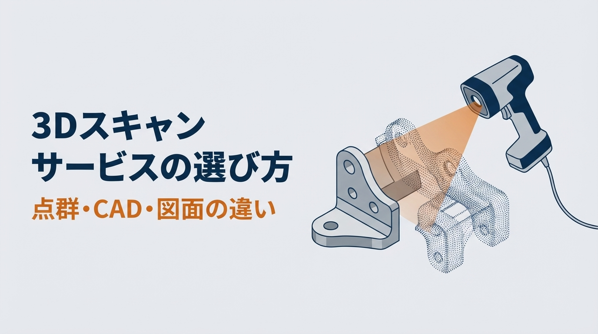
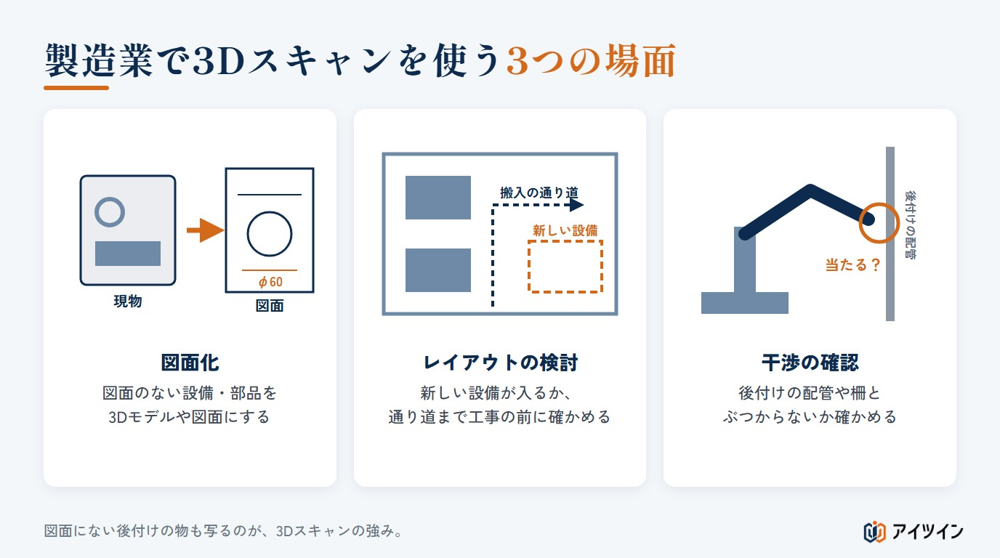
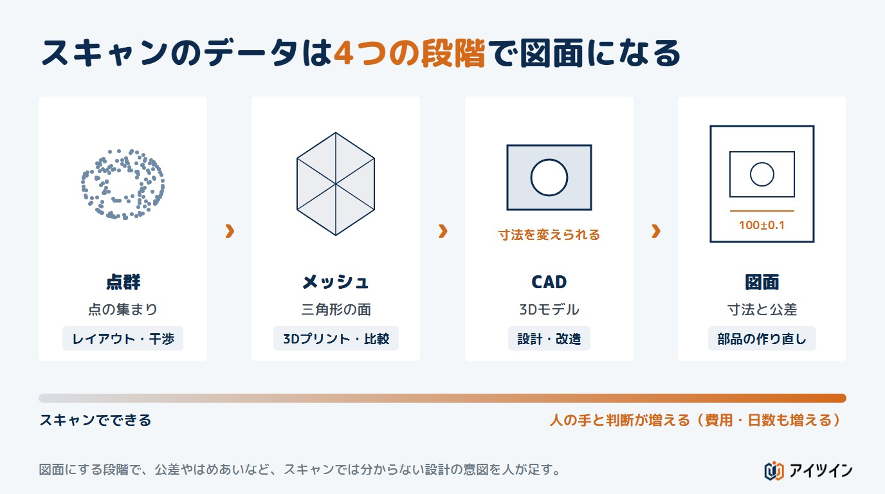
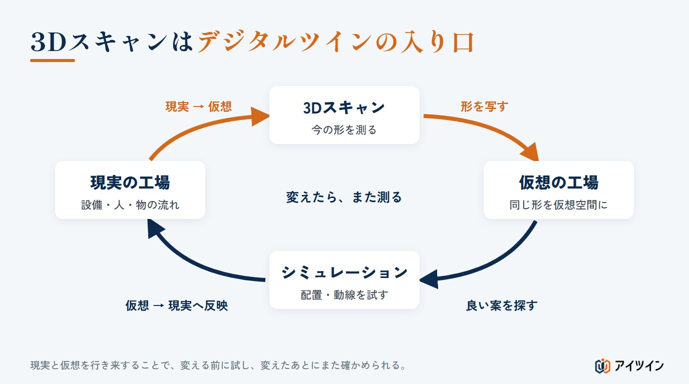

「この設備、図面が残っていない」「新しい装置を入れたいが、今のラインに収まるか分からない」。製造業では、現物の形を正確に知りたい場面がよくあります。巻尺とノギスで測るには大きすぎる、形が複雑すぎる。そんなときに使われるのが、3Dスキャンサービスです。
ただ、頼んでみたら「欲しかったデータと違った」ということも起こります。本記事では、3Dスキャンサービスの選び方を、製造業の部品・設備の例で解説します。スキャンの方法と精度の目安、届くデータ（点群・メッシュ・CAD・図面）の違い、料金が決まる要素、スマートフォンでできることまでを順に整理します。目的と大きさから、向いている方法を選べるツールも用意しました。
本記事の前提
- 精度の数値は、方法ごとのおおよその目安です。実際の精度は、機材、対象の大きさや表面、測る人と手順で変わります
- 機材や会社の名前は挙げず、方法の違いで説明します
- 料金の金額は、会社や内容で大きく変わるため、決まり方を説明します。当社の目安は料金ページにあります
この記事でわかること
- 3Dスキャンサービスで、製造業ができる3つのこと
- スキャンの方法の違いと、精度の目安
- 点群・メッシュ・CAD・図面の違いと、「スキャン＝図面」ではない理由
- 3Dスキャンサービスの料金が決まる6つの要素
- スマートフォンの3Dスキャンでできること、依頼の前に準備すること
3Dスキャンサービスとは｜製造業でできる3つのこと
3Dスキャンサービスは、現物の形を、光やレーザーで読み取って3Dのデータにするサービスです。会社によって、スキャンだけを受けるところと、データの加工や図面の作成まで受けるところがあります。製造業で頼まれることが多いのは、次の3つです。

図面のない設備・部品を、図面にする
古い設備の部品が壊れたのに図面がない、メーカーがもう作っていない、といった場面です。現物をスキャンして形を写し取り、3Dモデルや図面に起こします。現物から設計データを作るこの作業は、リバースエンジニアリングとも呼ばれます。部品の作り直しや、改造の設計に使えます。
新しい設備が入るか、レイアウトを検討する
工場の建屋や今のラインをスキャンすると、柱、配管、天井の高さ、通路まで含めた「今の姿」が3Dで残ります。新しい設備の3Dモデルを置いてみれば、搬入の通り道や、作業する人のスペースが足りるかを、工事の前に確かめられます。古い工場では、図面と現物が違っていることがあり、スキャンの効き目が大きくなります。
周りとぶつからないか、干渉を確かめる
ロボットのアームが周りの柵や配管に当たらないか、追加する部品が既存の部品とぶつからないかを、データ上で確かめます。図面にない後付けの配管やケーブルラックも、スキャンなら写るため、図面だけで確かめるより見落としが減ります。
この章のまとめ
- 3Dスキャンサービスは、現物の形を3Dのデータにするサービス
- 製造業では、図面化・レイアウトの検討・干渉の確認の3つが多い
- 図面にない後付けの物も写るのが、スキャンの強み
3Dスキャンの方法と精度の目安
3Dスキャンには、いくつかの方法があります。大きく分けると、小さな物を細かく測る方法と、大きな空間を広く測る方法です。精度と測れる大きさは、方法によって大きく違います。
方法ごとの比較一覧
| 方法 | 向いている対象 | 精度の参考（装置と条件で変わる） | 主な用途 |
|---|---|---|---|
| 光のパターンを当てる（据え置き・手持ち） | 小さな部品〜中くらいの部品 | 高精度な装置では0.1mm以下の例もある | 部品の図面化、作った物との比較 |
| レーザーの線を当てる（手持ち） | 部品〜大きめの装置（分けて測り、つなぎ合わせる） | 装置・距離・表面で変わる。高精度な装置では0.1mm以下の例もある | 部品や装置の図面化 |
| レーザーで周りを測る（三脚に据える） | 設備まわり・部屋・建屋 | 数mm程度の測定例がある。距離と位置合わせで変わる | レイアウトの検討、干渉の確認 |
| 写真から作る | 部品〜建物 | 撮り方、基準の寸法の置き方、対象の大きさしだい | 見た目の記録、広い範囲の形 |
| スマートフォン（一部の機種の距離センサー） | 部屋・大きな物のおおまかな形 | cm程度の誤差の例が報告されている | おおまかな寸法の確認、記録 |
精度は、方法だけでは決まりません。同じ方法でも、装置、測る距離、表面の状態、校正、何回かに分けて測ったデータの位置合わせで変わります。大きな物を分けて測ると、つなぎ合わせのずれが重なることがあり、基準点の置き方や位置合わせの方法で、そのずれを抑えます。光学式の三次元測定には、性能を確かめる手順を定めた規格（ISO 10360-13 など）もあります。依頼するときは、どの寸法を、どのくらいの精度で知りたいかを先に伝えると、方法の選び違いを防げます。
「精度」と「細かさ」は別のもの
見積もりや機材の説明では、「精度」と、点の間隔などの「細かさ（解像度）」が並んで書かれていることがあります。精度は、測った位置が本当の位置からどれだけずれるか、細かさは、どれだけ小さな形まで写るかです。点の間隔が0.05mmでも、全体の寸法が0.05mmの精度で測れるとは限りません。長い物ほど、つなぎ合わせのずれが積み重なるためです。全体は粗く、精度の要る所だけ細かく測ると、費用を抑えながら必要な寸法を押さえられます。
表面の状態で、測りにくい物がある
光やレーザーで読み取る方法は、表面の状態に左右されます。鏡のように光る金属、真っ黒な物、透明な物は、光がうまく返らず、データが欠けやすくなります。このような物は、表面に薄い粉を吹き付けてから測ることがあります。粉を付けてよいか、あとで落とせるかも、依頼の前に確かめておきます。精密に測るときは、粉の膜の厚さが寸法に影響することも考えます。
この章のまとめ
- 小さな物を細かく測る方法と、大きな空間を広く測る方法がある
- 精度は方法だけでなく、装置・距離・位置合わせで変わる
- 光る物・黒い物・透明な物は、前の処理が必要なことがある
届くデータの違い｜点群・メッシュ・CAD・図面
3Dスキャンサービスで一番つまずきやすいのが、届くデータの形です。「スキャンしてもらえば、すぐに図面になる」と思って頼むと、受け取ったデータが使えない、ということが起こります。スキャンのデータは、多くの場合、次の4つの段階を経て、図面になります。点群やメッシュから、断面の図や寸法の検査の図を直接作ることもあります。

点群：点の集まり
スキャンで最初にできるのは、表面の位置を表す、たくさんの点の集まりです。色の付いた点で、空間の様子がよく分かります。工場のレイアウトや干渉の確認には、点群のままで使えることが多くあります。ただし、点と点の間は空いているため、面の形として扱うには、次の段階が必要です。
メッシュ：三角形の面でつないだ形
点を小さな三角形でつないで、面にしたデータです。3Dプリンターでの出力や、作った物と元の形の比べ合わせに使えます。頂点を動かすなどの編集はできますが、「この穴の径を10mmから12mmに変える」といった、寸法を指定した変更には向きません。
CAD：寸法を変えられる3Dモデル
メッシュを下敷きにして、平らな面、円筒、穴などを、人がCADで作り直したデータです。ファイルの変換ではなく、作り直しの作業です。寸法を変えられ、設計にそのまま使えます。形を読み取り、どこを平らな面や円とみなすかを人が判断して作るため、手間と費用は、ここで大きく増えます。
図面：寸法と許される差を書いたもの
図面にするには、形のほかに、寸法の許される差（公差）や、はめあい、材料、表面の仕上げを決める必要があります。スキャンで分かるのは「今の形」だけです。すり減った部品をそのまま測れば、すり減った寸法が出ます。設計の意図は、スキャンからは分からないため、どの寸法を元の値に戻すかは、使う人と一緒に決めます。
ファイル形式の例
同じ段階のデータでも、ファイルの形式はいくつもあります。点群ならE57、PLY、LAS、メッシュならSTL、OBJ、PLY、CADならSTEPやIGES、図面ならPDFやDXFが、よく使われる形式の例です。PLYは点群にもメッシュにも使われ、DXFは2Dの図面のほかに3Dのデータも扱えるため、拡張子だけでなく中身も確かめます。自社のCADや、データを渡す先のソフトで開ける形式を、依頼の前に伝えておきます。点群やメッシュは、データの量が大きくなりやすいため、受け取り方（容量や渡し方）も決めておくと安心です。
この章のまとめ
- データは、点群 → メッシュ → CAD → 図面の順に作られる
- レイアウトや干渉の確認は、点群のままで足りることが多い
- 図面には、スキャンでは分からない設計の意図を、人が足す必要がある
3Dスキャンサービスの料金が決まる6つの要素
3Dスキャンサービスの料金は、会社や内容で大きく変わります。金額の幅が大きいのは、次の6つの要素で手間が変わるためです。
| 要素 | 料金が上がりやすい例 |
|---|---|
| 1. 大きさ | 設備や部屋のように大きい。何回にも分けて測り、つなぎ合わせる |
| 2. 必要な精度 | 0.1mm以下を求める。細かく測れる機材と、ていねいな手順が要る |
| 3. 表面と形 | 光る・黒い・透明、奥まった穴や内側がある。前の処理や測り直しが増える |
| 4. 数 | 同じ物がたくさんある（1個あたりは下がることもある） |
| 5. 届けるデータの段階 | 点群やメッシュでなく、CADや図面まで求める |
| 6. 現場の条件 | 出張して測る。設備を止められる時間が短い、夜や休日しか入れない |
この中で、金額をいちばん大きく動かすのは「5. 届けるデータの段階」です。点群の納品で済むのか、CADや図面まで要るのかで、手間が何倍も変わることがあります。見積もりを比べるときは、どの段階のデータまで含んだ金額かをそろえて比べます。当社の目安は、料金ページの3Dスキャンの項目にまとめています。
機材を買うか、サービスに頼むか
スキャナーを自社で買う方法もあります。ただし、機材のほかに、データを加工するソフト、使い方を覚える時間、測ったデータをCADにする腕が必要です。とくにCADに起こす作業は、慣れた人でも手間がかかります。年に数回なら、サービスに頼むほうがむだが少ないことが多く、毎月のように使うなら、購入や借りる方法を比べる価値があります。まずはサービスで一度試し、自社でどこまでやるかを決める進め方もあります。
この章のまとめ
- 料金は、大きさ・精度・表面と形・数・データの段階・現場の条件で決まる
- 金額を一番動かすのは、届けるデータの段階
- 見積もりは、どの段階まで含むかをそろえて比べる
自分の条件で試す｜3Dスキャンの選び方ツール
目的、対象の大きさ、必要な精度、表面の状態を選ぶと、向いているスキャンの方法、届けてもらうデータの段階、費用が上がりやすい点、スマートフォンで足りるかの目安が出ます。依頼の前の整理に使ってください。
3Dスキャンの選び方（目安）
本記事の方法の比較と、データの4つの段階にもとづく、一般的な目安です。実際に向いている方法は、機材、対象の形、現場の条件で変わります。結果は、方法や精度を保証するものではありません。依頼するときは、目的と必要な精度を伝えて、依頼先と決めてください。
何に使いますか
対象の大きさ
必要な精度
表面の状態
結果
| 向いている方法 | |
|---|---|
| 届けてもらうデータ | |
| 費用が上がりやすい点 | |
| スマートフォンで足りるか | |
| 依頼のときに伝えること |
当社の料金の目安は、料金ページの3Dスキャンの項目にあります。
スマートフォンの3Dスキャンでできること・できないこと
一部のスマートフォンやタブレットには、距離を測るセンサーが付いていて、専用のアプリで3Dスキャンができます。手軽に試せるため、「業者に頼まなくても、スマートフォンで十分では」と考える人もいます。
向いているのは、部屋や大きな設備のおおまかな形を、記録として残す使い方です。設備を置けそうか、通路の幅がどのくらいかの見当を付けるには役立ちます。一方で、cm程度の誤差の例が報告されていて、アプリや対象の大きさ、距離でも変わります。小さな部品や、公差やはめあいを決める図面のための寸法には向きません。スマートフォンで当たりを付け、必要な所だけ業者に頼む、という使い分けがむだのない進め方です。
工場でスマートフォンを使うときの注意
工場の中は、撮影が禁じられている場所や、客先の製品が写り込む場所があります。また、3Dスキャンのアプリの中には、データを作るために、撮った内容を外部のサーバーに送るものがあります。社内の撮影の決まりと、データの保存先、外部に送るかどうか、共有の設定、消し方を確かめてから使うことが大切です。
この章のまとめ
- スマートフォンは、部屋や大きな物のおおまかな記録に向く
- 部品の図面化のような細かい寸法には向かない
- 当たりを付けるのはスマートフォン、必要な所は業者、と使い分ける
3Dスキャンは、デジタルツインの入り口
3Dスキャンのデータは、図面化やレイアウトの確認で終わりではありません。工場の建屋と設備をスキャンすると、仮想の空間に、現実と同じ形の工場ができます。これが、デジタルツインの土台になります。

現実と仮想を、行き来する
仮想の工場の中で、設備の置き場所を動かしたり、物や人の流れをシミュレーションしたりして、通りやすい動線や、待ちの少ない配置を探します。良い案が見つかったら、それを現実の工場に反映します。変えたあとの工場をまた測れば、仮想の工場も今の姿にそろいます。現実から仮想へ、仮想から現実へという行き来が、デジタルツインの考え方です。3Dスキャンは、その最初の一歩になります。
製造業以外でも広がっている使い方
3Dスキャンは、ほかの業界でも使われています。建設の現場では、工事の途中をスキャンし、設計の3Dモデルと比べて、計画どおりに進んでいるかを確かめる使い方があります。不動産では、部屋を3Dで撮影して、Webで見て回れる内見が使われています（3Dスキャナーのほか、360度カメラなども使われます）。業界が変われば、使い道はまだまだ広がりそうです。
この章のまとめ
- 工場をスキャンすると、仮想の空間に同じ工場ができる
- 仮想で試し、現実に反映し、また測る行き来がデジタルツイン
- 建設の進み具合の確認や、不動産のWeb内見にも使われている
3Dスキャンサービスに依頼する前に準備すること
依頼の前に、次のことを決めておくと、見積もりが早く、ずれも少なくなります。
- 目的：図面にしたいのか、レイアウトや干渉を確かめたいのか、作った物と比べたいのか
- 精度：どの寸法を、どのくらいの精度で知りたいか（全部を細かく測る必要はないことが多い）
- 欲しいデータ：点群・メッシュ・CAD・図面のどこまでか。使っているCADで開けるファイルの形式
- 対象：大きさ、数、表面（光る・黒い・透明）、粉を付けてよいか、持ち出せるか
- 現場の条件：設備を止められる時間、立ち入りや撮影の決まり、データを社外に出してよいか
- 手元の資料：古い図面や写真があれば、一部でも役に立つ
見積もりを比べるときの確認項目
- どの段階のデータ（点群・メッシュ・CAD・図面）まで含んだ金額か
- 精度をどう確かめるか（基準の寸法との比べ方や、報告の有無）
- 表面への粉の吹き付けなど、前の処理の費用が含まれているか
- 出張の費用と、現場での作業時間の見込み
- 納期と、届いたデータを直してもらえる範囲
- データの保管と、作業が終わったあとの扱い
依頼でよくある失敗
よくあるのは、目的を決めずに「とりあえず全部を細かく」と頼み、費用がかさむ失敗です。反対に、精度の足りない方法で測ってしまい、部品が合わずに作り直す失敗もあります。また、届いたデータの形式が自社のCADで開けない、ということも起こります。目的・精度・データの形式の3つを、最初にそろえることで、多くの失敗は防げます。
この章のまとめ
- 目的・精度・欲しいデータを、依頼の前に決める
- 表面の状態や、現場の条件も伝える
- データの形式が自社のCADで開けるかを確かめる
3Dスキャンサービスのよくある質問
3Dスキャンサービスの価格は、どのくらいですか
大きさ、精度、届けるデータの段階で大きく変わります。同じ部品でも、点群の納品だけか、CADや図面まで作るかで、金額は何倍にもなることがあります。当社の目安は料金ページにあります。写真と目的を送っていただければ、お見積りをお出しします。
スキャンしたデータで、強度計算もできますか
できます。スキャンで形を測り、3Dモデルを作ってから強度計算をします。図面のない架台や設備でも、形を測るところから計算書の作成まで続けて進められます。計算の考え方は、架台の強度計算の方法と例で解説しています。
設備を動かしたまま、スキャンできますか
ふつうの3Dスキャンでは、測っている間に物が動くと、データがゆがみます。動く物を測る方法や、ゆがみを補正する技術もありますが、設備や部品の形を測るなら、止めて測るのが確実です。止められる時間が短い場合は、測る範囲と順番を前もって決めておき、短い時間で終わるように計画します。建屋や通路のように動かない所は、設備が動いていても測れる場合があります。
社外に出せない設備でも、頼めますか
ご相談いただけます。当社では、工場の3Dスキャンや撮影のデータを、外部のクラウドや第三者に渡さず、社内の閉じた環境で処理しています。データの持ち出しの範囲や、作業後の扱いも、最初の打ち合わせで決めます。
まとめ
3Dスキャンサービスは、現物の形を3Dのデータにするサービスです。製造業では、図面のない設備・部品の図面化、レイアウトの検討、干渉の確認によく使われます。方法によって精度と測れる大きさが違い、届くデータも点群・メッシュ・CAD・図面の4段階があります。料金を一番大きく動かすのは、どの段階のデータまで求めるかです。
「何のために、どの寸法を、どのデータの形で欲しいか」を最初に決めることが、3Dスキャンサービスを上手に使ういちばんの近道です。まずは選び方ツールで、ご自身の目的と対象を入れて試してみてください。
参考
・ISO 10360-13（光学式の三次元座標測定システムの受入れ・再検証の試験）
・ISO 17123-9（地上型レーザースキャナーの現場での試験の手順）
・ASTM E2807（3Dのデータを交換する形式 E57）

この記事を書いた人
株式会社アイツイン 代表 加瀬部 裕紀
製造業に15年在籍し、設備の保全と設計の両方を経験。現場と同じ目線で、計算・設計のお手伝いや、省力化・デジタルツインの導入を支援しています。